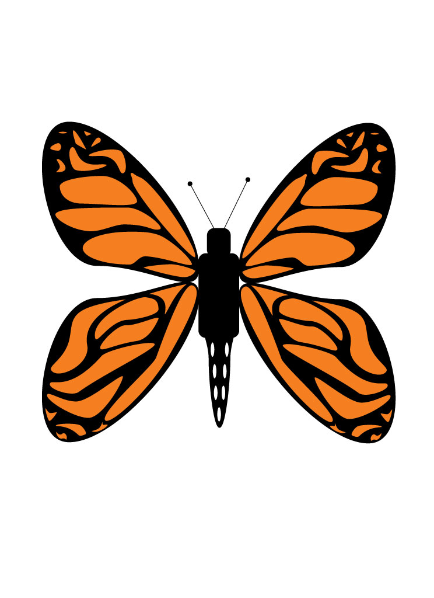
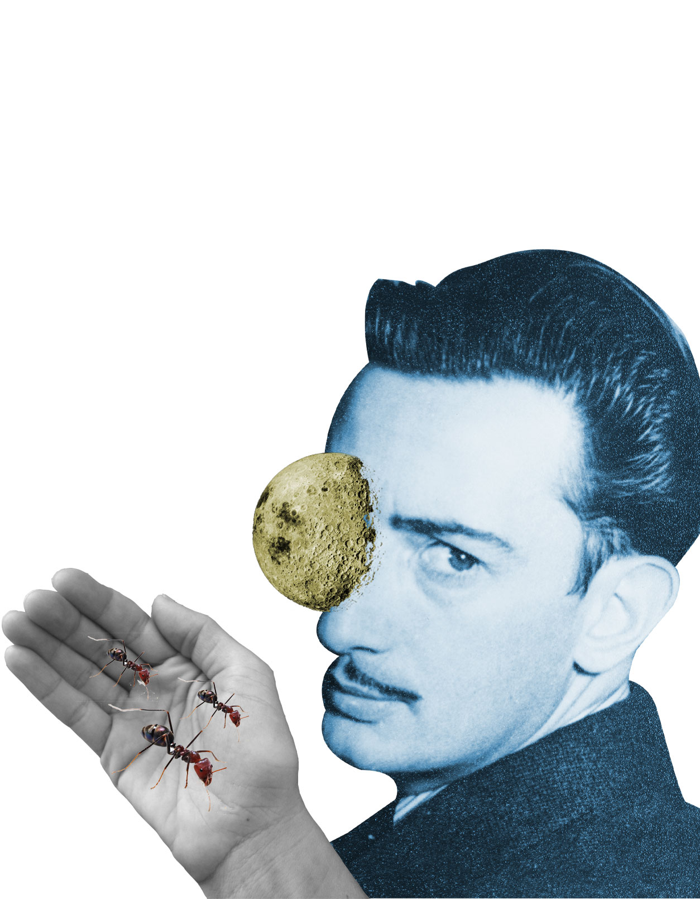
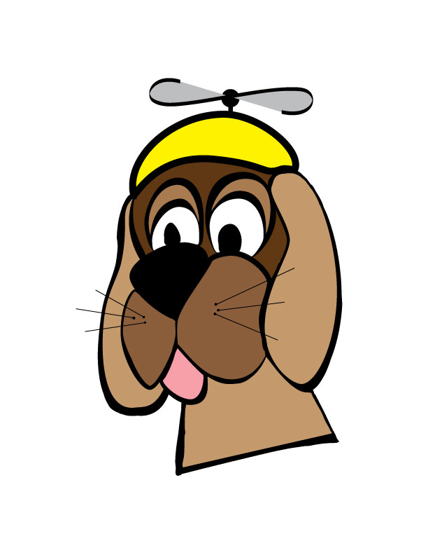
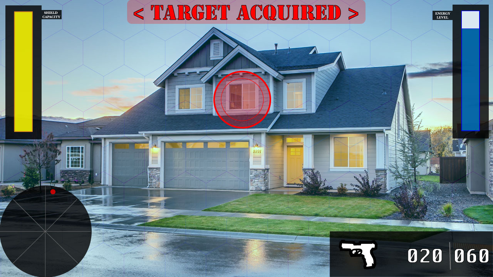
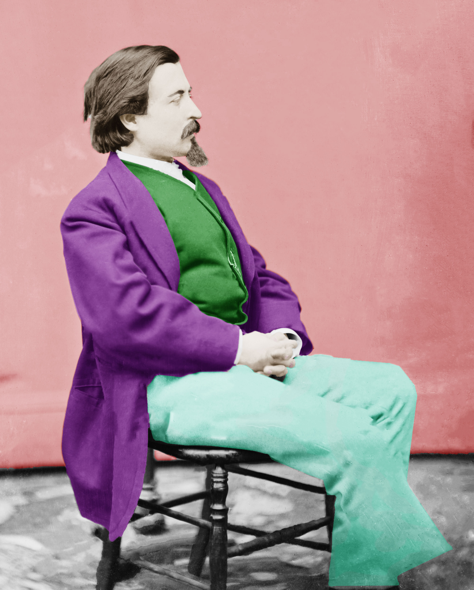
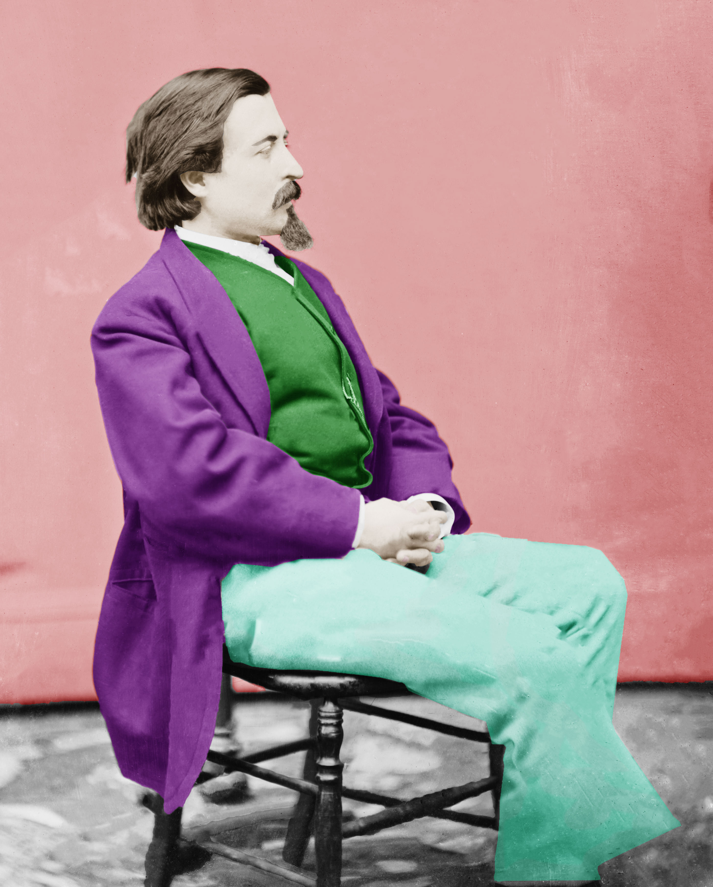
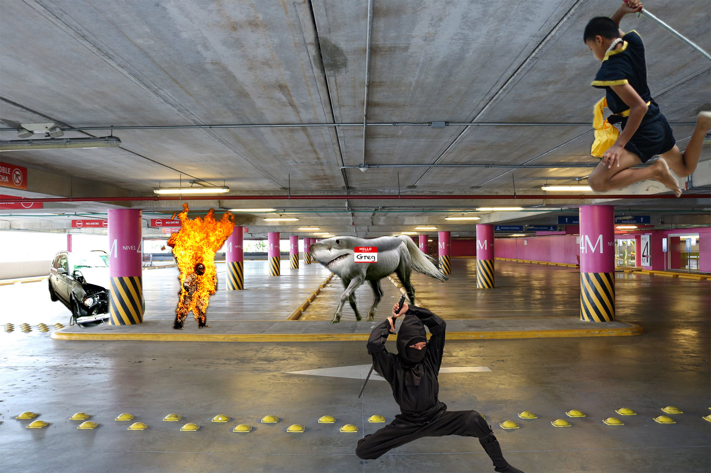
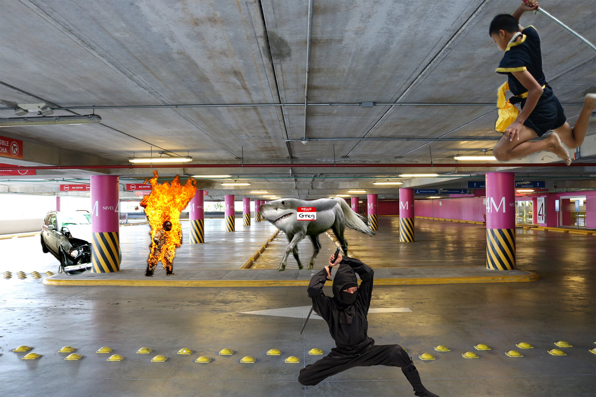

Luke Bono is an up and coming Game Design and Developer curretnly working his way through college. His after-college goal is to one day work for the most renound
game developing company, Bungie, Inc. Luke is looking forward to learning all sorts of new techniques to better his future game designing career by taking classes on HTML
scripting and Photo/Video editing using Adobe.
With those under his belt, he's hopeful that he'll be able to work for a game developing company as a future Game Developer. His previous works as a designer and
developer include, but are not limited to, a story telling based podacst, book/play scripts, as well as ideas for video games. I feel that my ideas will draw out what's important
says Luke about how his ideas will shape the current and next generation of "Gamers".
in pople by having them 'feel' what the character(s) are going through
Some of my skills include, but are not limited to:
Listed are the Softwares and hardwares that I'm learning or have learned:
You can find me here:
Here are some of my previous work samples:




 


 
